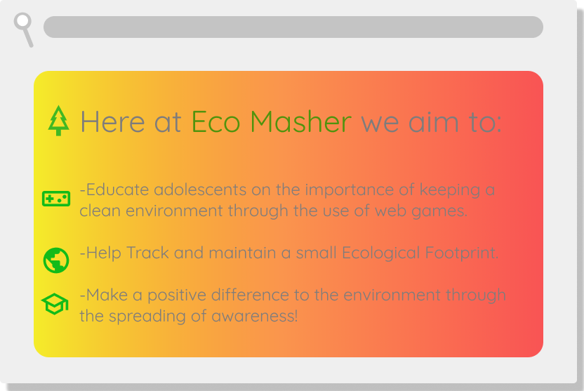
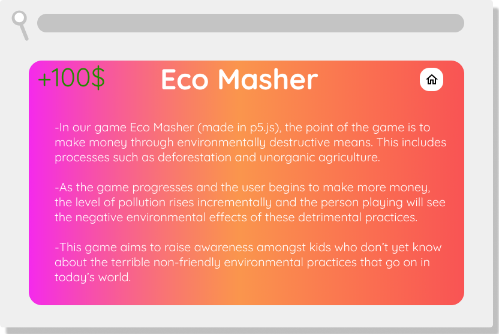
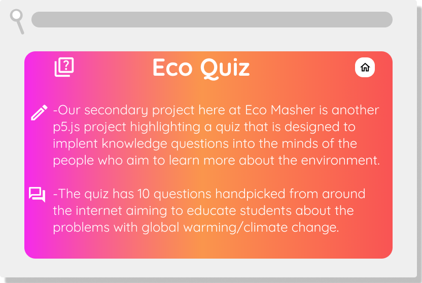
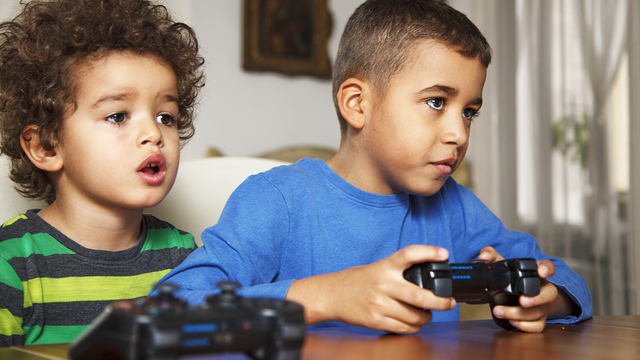

Welcome to our hackathon project
EcoMasher
If you want to learn about saving the environment, you've come to the right place.



"Here at Eco Masher, we believe that awareness is the first step towards global, environmental recovery"
-Joey Liu, Co Founder of Eco Masher

